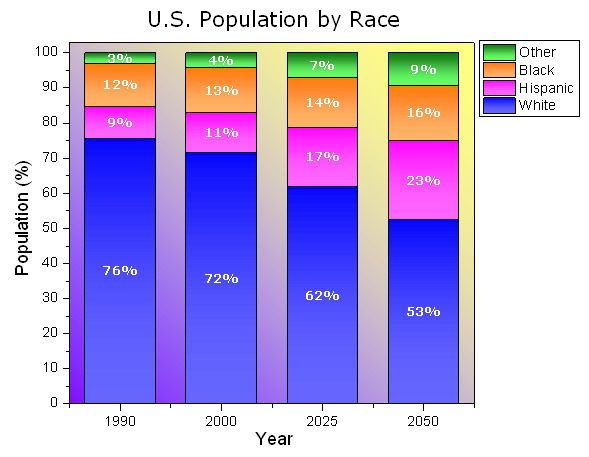
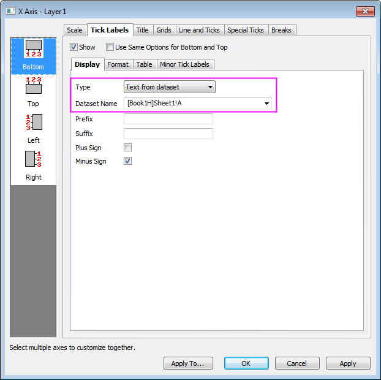
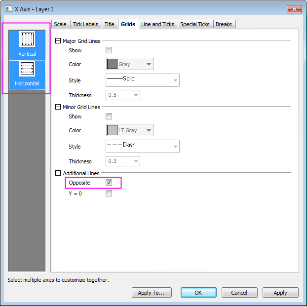
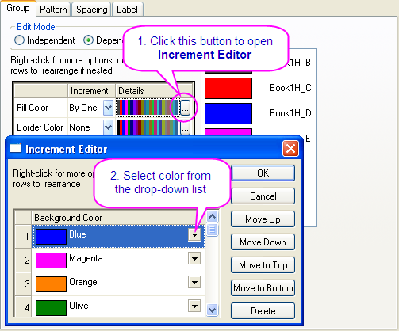
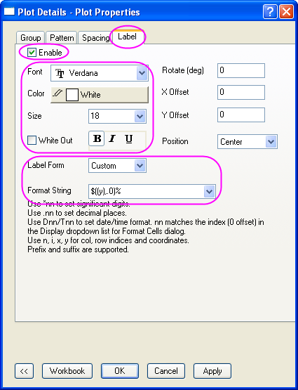
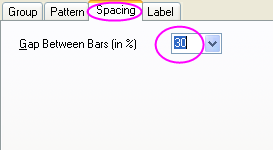
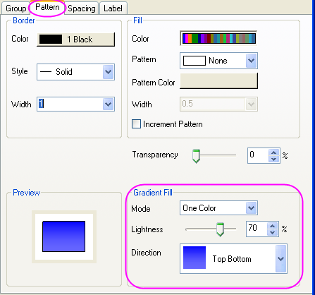
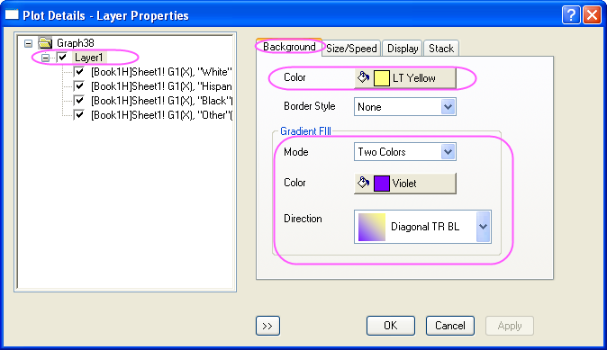

Gestapelte Säulen mit Beschriftung
StackColumn-Labels
Zusammenfassung
Dieses Diagramm zeigt ein gestapeltes Säulendiagramm an. Jeder Datenpunkte in jeder Säule wurde mit dem zugehörigen Datenwert beschriftet und die benutzerdefinierte Formatierung auf Säulenfüllungen und -beschriftungen angewendet.
- 
Origin-Version mind. erforderlich: 2015 SR0
Was Sie lernen werden
Dieses Kapitel zeigt Ihnen, wie Sie:
- ein gestapeltes Säulendiagramm erstellen,
- Beschriftungen zu Säulen hinzufügen,
- das Säulendiagramm benutzerdefiniert anpassen.
Schritte
Dieses Tutorial basiert auf dem Projekt: <Origin-Verzeichnis>\Samples\Tutorial Data.opj.
- Öffnen Sie Tutorial Data.opj und navigieren Sie zum Ordner Stack Column With Labels im Projekt Explorer (PE).
- Aktivieren Sie das Arbeitsblatt und markieren Sie Spalte B bis E. Wählen Sie im Menü Zeichnen: Einfache 2D: Gestapelte Säulen. Alternativ können Sie auch auf die Schaltfläche Gestapelte Säulen auf der Symbolleiste 2D Grafiken klicken.

- Klicken Sie doppelt auf die Hilfsstrichsbeschriftungen der X-Achse, um den Dialog Achsen zu öffnen. Gehen Sie dann zur Registerkarte Beschriftung der Hilfsstriche und legen Sie die Beschriftung der Hilfsstriche auf der X-Achse fest:
- 
- Wechseln Sie zur Registerkarte Gitternetze und halten Sie die Strg-Taste gedrückt, um das Symbol Horizontal im linken Bedienfeld auszuwählen, um die Änderungen gleichzeitig auf die Y-Achse anzuwenden. Aktivieren Sie das Kontrollkästchen Gegenüber, um Linien hinzuzufügen, die gegenüber von der X- und Y-Achse liegen:
- 
- Gehen Sie zur Registerkarte Skalierung und klicken Sie auf das Symbol Vertikal im linken Bedienfeld, um den Wert von Bis auf 102 zu setzen. Klicken Sie auf OK, um die Einstellungen anzuwenden, und schließen Sie den Dialog Achsen.
- Klicken Sie zum Öffnen des Dialogs Details Zeichnung doppelt auf die Zeichnung. Legen Sie auf der Registerkarte Gruppe die Füllfarbe, wie unten zu sehen, fest:
- 
- Aktivieren Sie auf der Registerkarte Beschriftung das Kontrollkästchen Aktivieren. Legen Sie Schrift, Farbe und Größe mit Verdana, weiß bzw. 18 fest. Setzen Sie Beschriftungsform auf Benutzerdefiniert und geben Sie dann "$((y),.0)%" für die Formatzeichenkette ein.
- 
- Setzen Sie auf der Registerkarte Abstände die Option Lücke zwischen Balken (in %) auf 30.
- 
- Legen Sie auf der Registerkarte Muster die Gradientenfüllung, wie unten zu sehen, fest:
- 
- Wählen Sie Layer1 im linken Bedienfeld. Legen Sie auf der Registerkarte Hintergrund die Farbe und die Gradientenfüllung, wie unten zu sehen, fest:
- 
- Klicken Sie auf OK, um den Dialog zu schließen. Um das Diagramm zu vervollständigen, ändern Sie die X- und Y-Achsenbeschriftungen in "Year" und "Population (%)" und fügen dann den Diagrammtitel "U.S. Population by Race." hinzu.